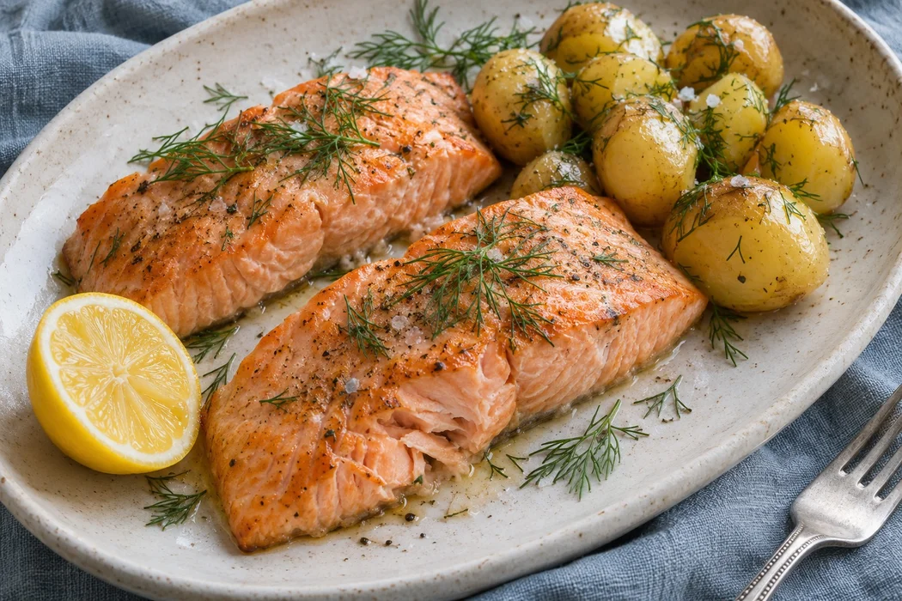
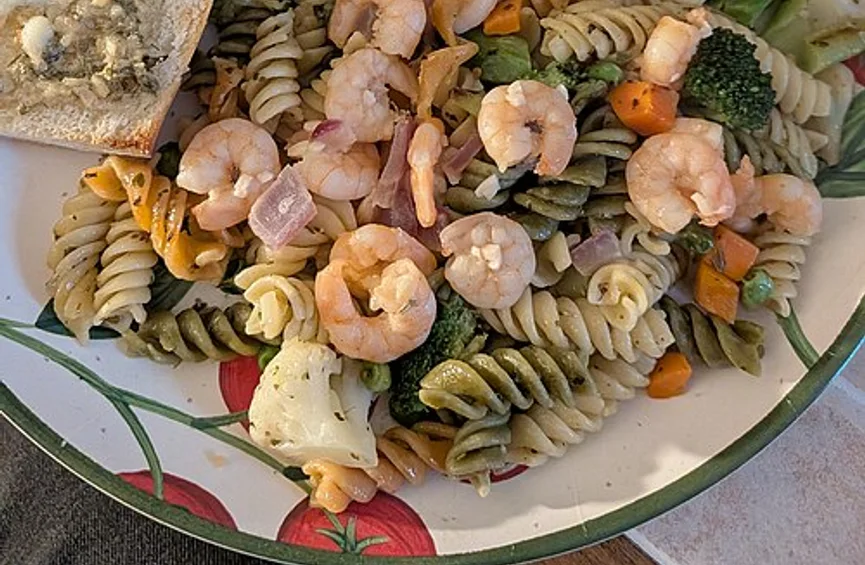
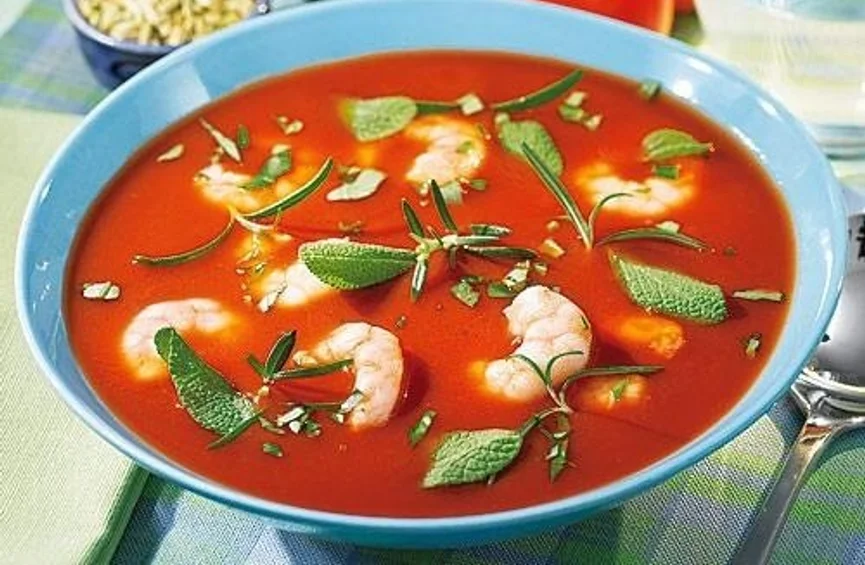
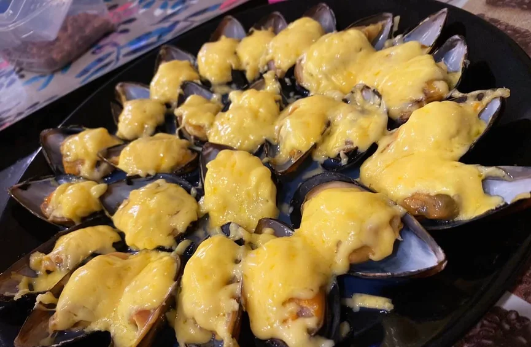
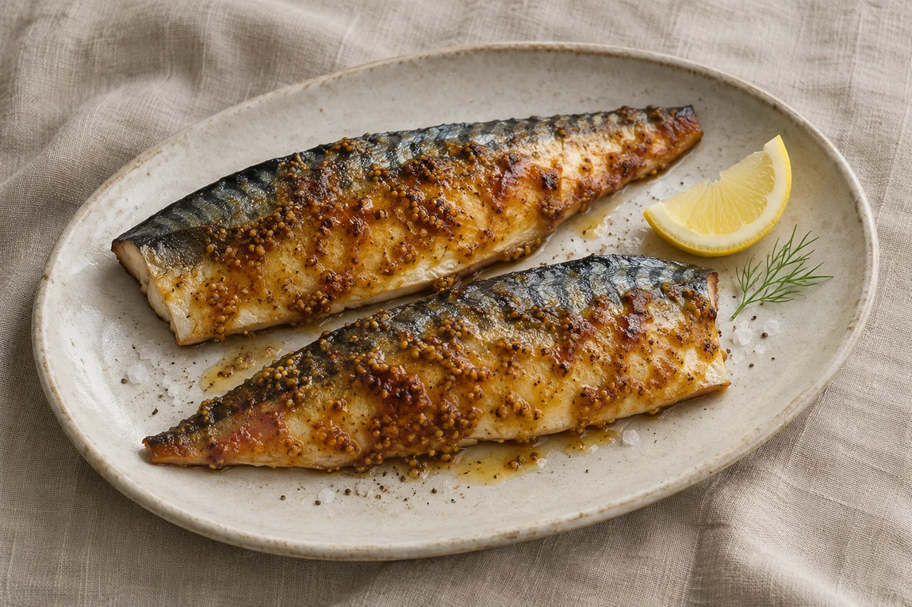
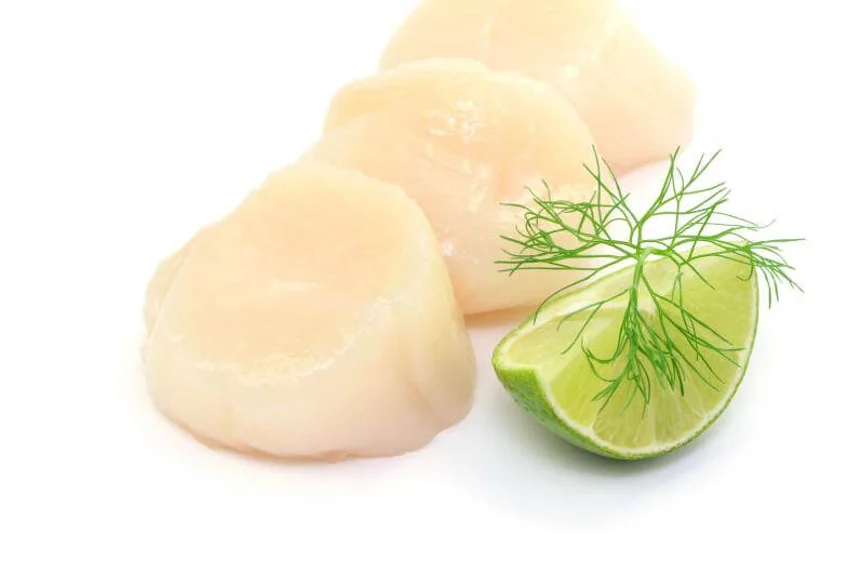
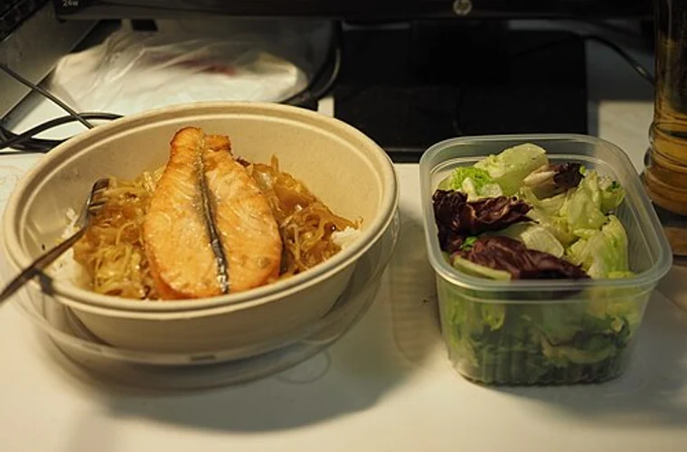

Рецепты с рыбой и морепродуктами
Количество ингредиентов можно пересчитать на нужное число порций.

45 минут
Сёмга с картофелем и лимоном

30 минут
Паста с лангустинами и пореем

30 минут
Томатный крем-суп с креветками

20 минут
Мидии под сырной корочкой

40 минут
Скумбрия в горчично-медовом соусе

20 минут
Морские гребешки с пореем

25 минут